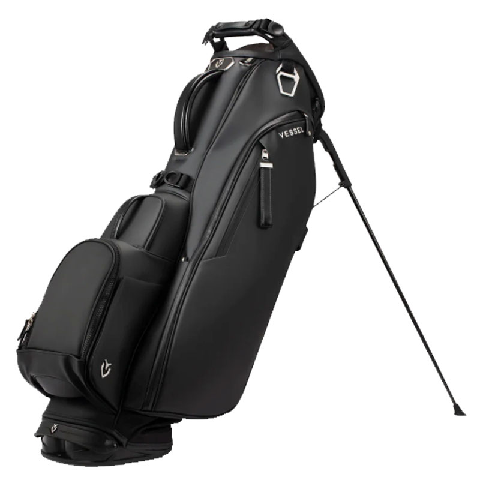
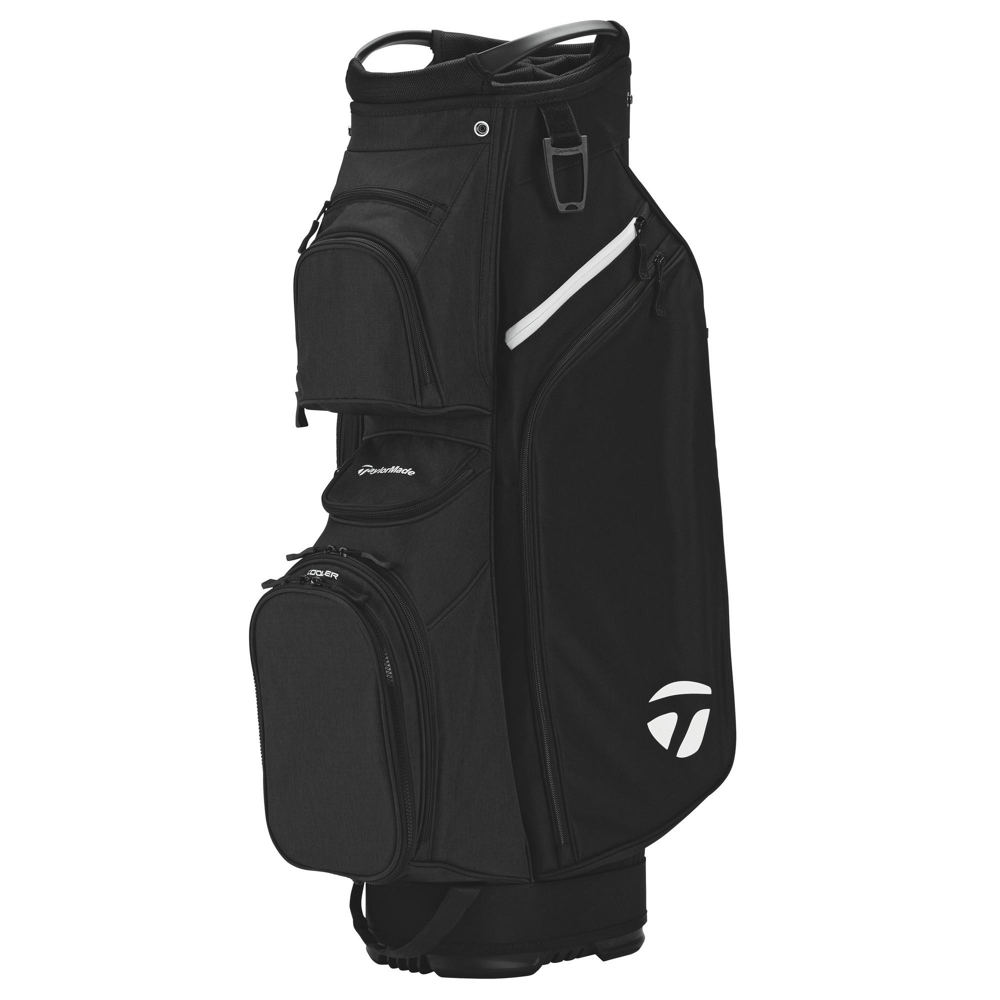
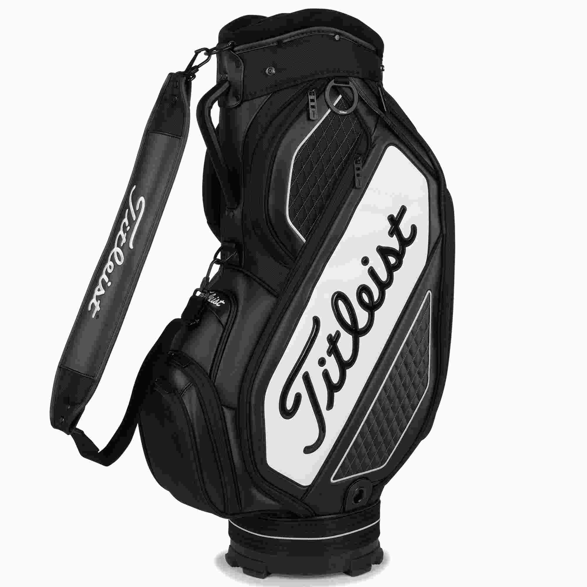
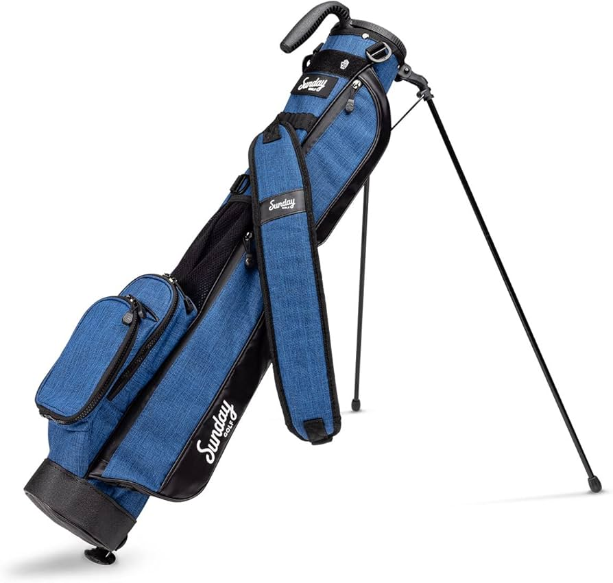
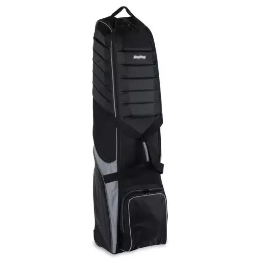

Why Golf Bags Matter
A golf bag is with you for every round, whether you walk, use a push cart, or ride in a power cart.
It affects how comfortable it is to move around the course and how quickly you can find what you need.
Good bag design makes it easier to:
- Organize clubs so you always know where each one is.
- Access balls, tees, gloves, towels, and rangefinders quickly.
- Protect clubs and valuables from rain and rough handling.
- Carry or push your setup without unnecessary weight or strain.
Main Types of Golf Bags
There are several common styles of golf bags. Each one is designed for a different way of playing.

Stand Bags
Stand bags are designed for walking golfers. They have built-in legs that let the bag stand up
on the fairway, and they usually include double shoulder straps for carrying. They balance weight
and storage, making them a popular “all-round” choice.

Cart Bags
Cart bags are meant to sit on a push cart or power cart. They are larger and have more pockets,
but they are heavier and not comfortable to carry long distances. Best for players who always ride
or use a push cart.

Tour Bags
Tour bags are big, heavy bags like those used by professionals on TV. They offer maximum storage,
thick materials, and a premium appearance, but are not practical for walking without a caddie.

Sunday & Carry Bags
Sunday bags are light, slim bags for short rounds, practice, or travel. They often have fewer pockets
and no stand legs, focusing on minimal weight and simplicity.

Travel Covers
Travel covers go over your regular golf bag to protect it and your clubs during flights or long trips.
They include padding for the heads of the clubs and handles for easier transport through airports.
Materials & Construction
Golf bags use different fabrics and construction methods to balance durability, weight, and weather resistance.
Nylon & Polyester
Most modern bags are made from nylon or polyester. These synthetic fabrics are light, durable, and resist
tearing. They are a good choice for players who want a balance between weight and strength.
Water-Resistant & Waterproof Fabrics
Some bags use coated fabrics, sealed zippers, and waterproof pockets to handle rain. These are useful
in Vancouver’s wet climate, especially for players who walk and play year-round.
Leather & Premium Materials
A few high-end and classic-style bags use leather or leather accents. They look and feel very premium,
but they can be heavier and require more care to keep them in good condition.
Dividers & Padding
Bags may have 3-way, 4-way, 7-way, or 14-way top dividers to separate clubs. Full-length dividers
help prevent shafts from getting tangled and reduce wear, while extra padding protects the clubheads.
Choosing a Golf Bag That Fits Your Game
The best golf bag depends on how you like to play:
- If you walk most rounds, a lighter stand bag with comfortable straps is usually best.
- If you always ride or use a push cart, a cart bag with more pockets can make sense.
- If you travel often, a solid travel cover is important to protect your clubs.
- If you like minimal gear, a Sunday or small carry bag keeps everything simple.
Think about how many clubs you use, how much you carry (rain gear, extra clothes, rangefinder,
snacks, etc.), and whether you want a bag that works in both walking and cart situations.
Where to Buy Golf Bags in Vancouver
In Vancouver and the surrounding area, golfers can find a wide selection of golf bags at
dedicated golf shops, course pro shops, and larger sports retailers. Common options include:
- Golf Town – Vancouver (West Broadway)
- Golf Town – Richmond (Bridgeport Road)
- UBC Golf Club Pro Shop – University Golf Club
- McCleery Golf Course Pro Shop – Vancouver
- Langara Golf Course Pro Shop – Vancouver
- Northlands Golf Course Pro Shop – North Vancouver
- Local sports stores that include a golf section
Visiting a shop in person lets you lift the bag, check the strap comfort, look at pocket layout,
and see how the colors and style match the rest of your setup.
Popular Golf Bag Brands
Many major golf brands offer bags in different categories, from lightweight stand bags to tour-style
staff bags. Some of the most common brands you can find in Vancouver include:
- Titleist – Classic design, high-quality stand and cart bags.
- TaylorMade – Modern styling with a mix of performance and storage.
- Callaway – Wide range from entry-level to premium bags.
- Ping – Known for very comfortable stand bags and solid construction.
- Sun Mountain – Popular for lightweight, well-balanced carry and cart bags.
- OGIO – Focus on organization, extra pockets, and unique designs.
- Vessel / Jones – Premium and lifestyle-inspired bag designs.
Each brand has its own feel and styling, but the most important thing is how the bag works for
you on the course—how it carries, how it sits on a cart, and how easy it is to use during a round.
Building a Setup That Works for You
As an amateur golfer who changes equipment often, it is easy to focus only on clubs and forget
how much the bag affects the overall experience. A bag that matches your habits—walking or riding,
playing in the rain or just in the summer—can quietly make every round smoother and more enjoyable.
By understanding the types of bags, materials, and features available in Vancouver, you can choose
a golf bag that supports your game, protects your gear, and fits your own style on the course.